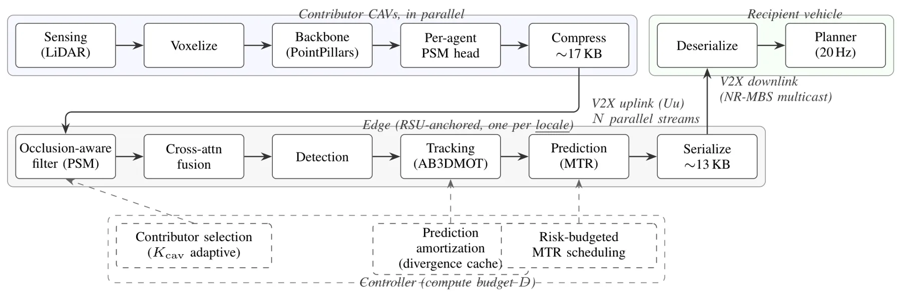
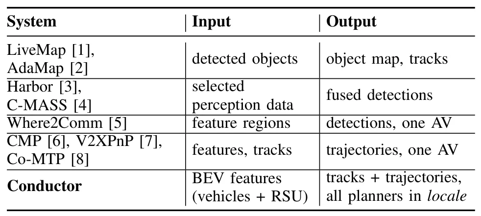
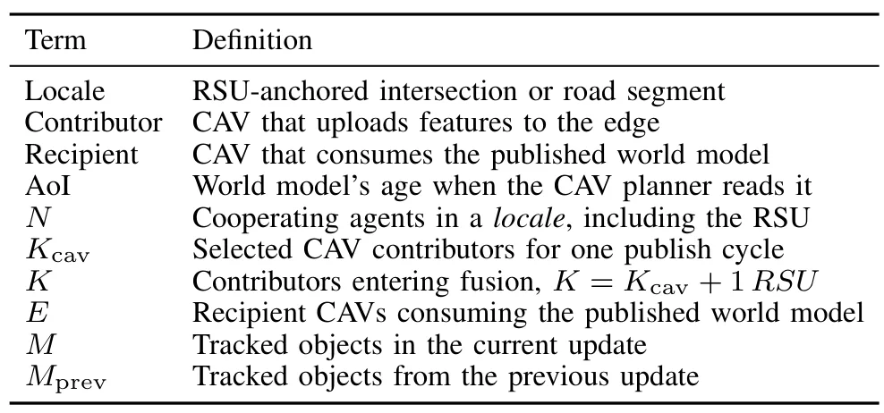

Conductor：面向连接自动驾驶的可扩展边缘融合与路径预测Scalable Edge-assisted Fusion and Path Prediction for Connected Autonomous Vehicles
A 级空间感知/可靠系统方向，方法可迁移到机器人协同定位和边缘地图更新。
一句话工作总结
它把多传感器融合质量、预测计算量和信息时效性放进同一个风险预算控制问题。
半海报（待补全）
当前记录尚未达到完整海报质量门槛，暂不把摘要或评分理由冒充方法/实验结论。
待补字段：研究上下文.authors（至少 1 条实质条目）。下一次任务需从论文全文或官方 HTML 提取证据后再发布。
摘要
Conductor 在 RSU 锚定视角下融合 CAV 信息并预测轨迹，用遮挡感知选择器和运行时控制器满足 Age of Information 约束。仿真覆盖最多 31 辆 CAV，并比较随机选择与 Oracle。
The planning algorithms inside an Autonomous Vehicle (AV) rely on information from on-board sensors whose line of sight is limited by emerging traffic conditions and occlusions. Edge-assisted creation of a unified world model fusing information from AVs and Road Side Units (RSUs) in a geographical locale, and the prediction of AVs' future trajectories, can enhance the planning algorithms inside AVs to improve quality metrics, such as better traffic flow and collision prevention. AVs participating in such enhancements are called Connected Autonomous Vehicles (CAVs). However, such information generated by the edge (world model and motion predictions) must reach the planners within a tight Age of Information (AoI) time budget to be useful. The state of the art fuses per-CAV information: each AV fuses inputs from other actors locally, which limits both scalability with actor count and quality of results. We present Conductor, an edge-based solution for creating a unified world model from the perspective of a fixed anchor (e.g., an RSU) in a locale and predicting future trajectories of AVs in that locale. Our solution adheres to the AoI time budget by dynamically limiting the number of AVs that would lead to the best quality of results. Specifically, we introduce an occlusion-aware selector that favors information contribution by AVs that detect objects in the locale not covered by RSUs. We pair this selector with a runtime controller that adapts both the number of AV inputs to fuse and the amount of trajectory predictions in each cycle to stay within the AoI time budget. Evaluation on CAV simulation infrastructure shows our joint selector-controller meets the AoI safety bound across traffic scenarios with up to 31 CAVs, with fusion fidelity close to an Oracle and much better than a random selector under the same AoI constraint.
图表/页面预览

{kind=link}

{kind=link}

{kind=link}
